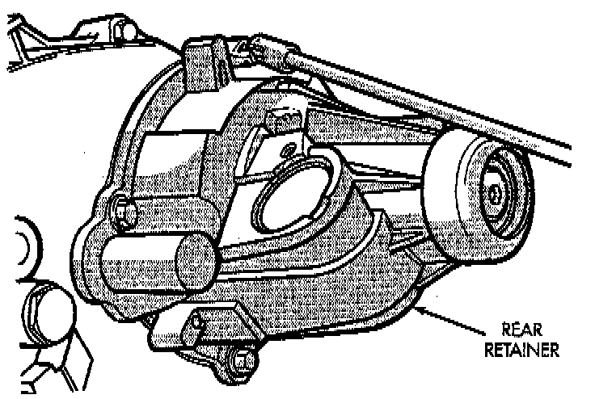
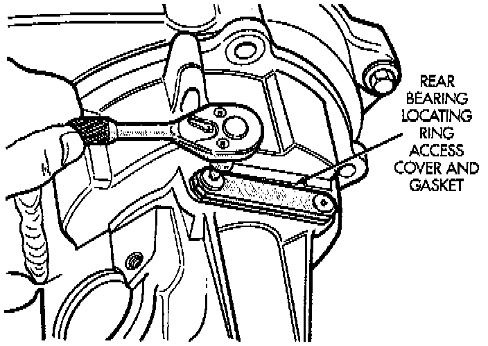
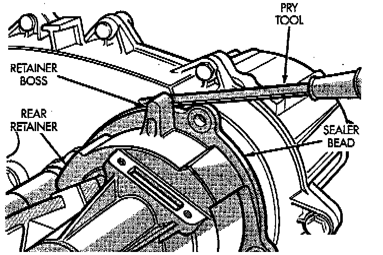
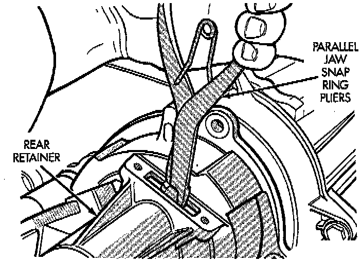
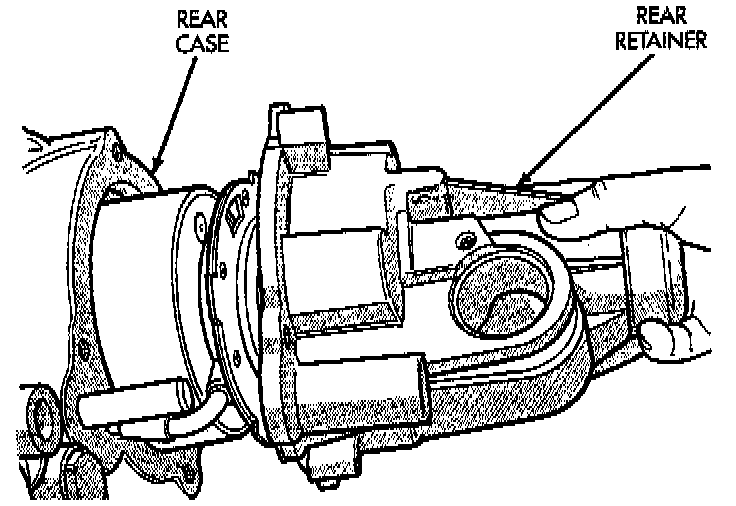
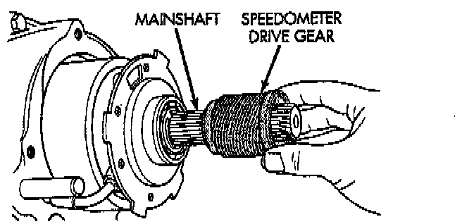
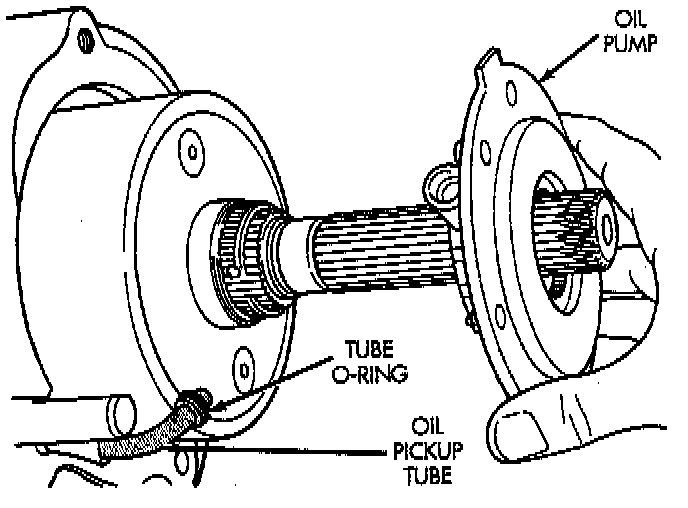
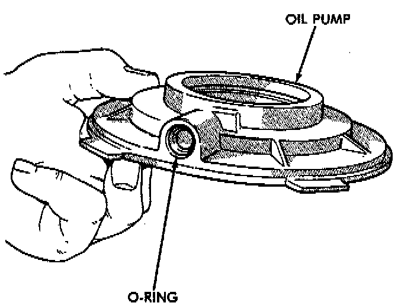

Rear Retainer and Oil Pump Removal
1. Remove the speedometer adapter.
2. Remove rear retainer bolts.

3. Remove rear bearing locating ring access cover screws, cover and gasket.

4. Loosen rear retainer with pry tool to break sealer bead. Pry only against retainer boss as shown.
5. Remove rear retainer as follows:

a. Spread rear bearing locating ring with snap ring pliers.

b. Then slide retainer off mainshaft and rear bearing.

6. Remove speedometer drive gear.
7. Remove rear bearing snap-ring.
8. Remove rear bearing. Note position of bearing locating ring groove for assembly reference.

9. Disengage oil pickup tube from oil pump and remove oil pump assembly.

10. Remove pick-up tube O-ring from oil pump, if necessary. Do not disassemble the oil pump, it is not serviceable.